A Review of 2021
Steven P Sanderson II, MPH
25 January, 2023
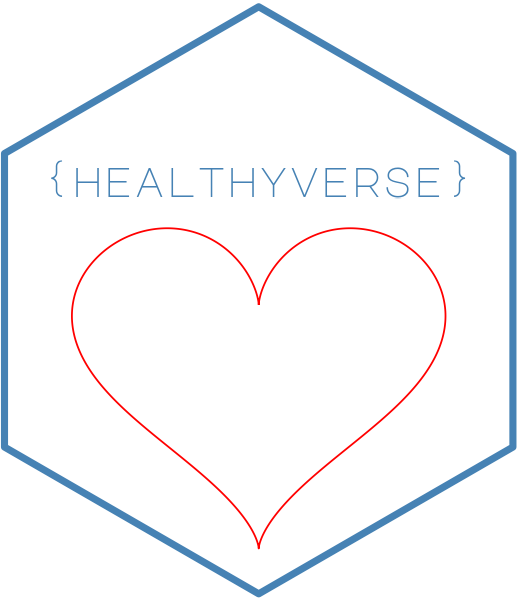
 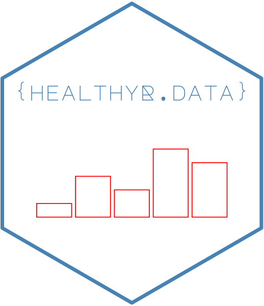
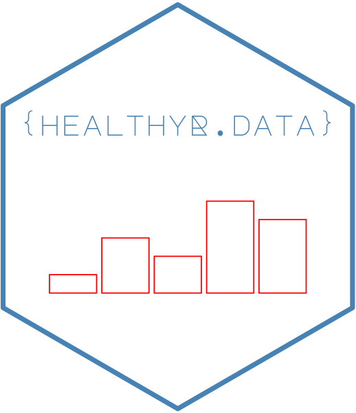


2021 A Year in Review
The year 2021 was a big year for me. I did a lot of coding, a lot more than I typically do. The biggest push came personally in my ongoing development of my R packages that are in the healthyverse. To use the healthyverse simply do so in the familiar fashion:
install.packages("healthyverse")
library(healthyverse)Here are links to all of the packages:
In order to start looking at some of the data that pertains to 2021 lets first get the data from the CRAN logs. Since I do this daily already, I can simply use the rds file I already have. I am going to go through the motions though, in case others might want to do something similar. The functions I am using to get the data can be found here
Now lets get that data!
library(tidyverse)
library(lubridate)
source("01_scripts/get_data_functions.R")
source("01_scripts/data_manipulation_functions.R")
source("01_scripts/mapping_functions.R")
get_cran_data()
get_package_release_data()
csv_to_rds()Ok now that we have our data, lets ensure that we are only using the year 2021. We can do this by filtering out data by time with the timetk package.
Now lets filter our data below, some pre-processing may need to take place.
library(timetk)
data_tbl <- downloads_processed_tbl() %>%
filter_by_time(
.date_var = date,
.start_date = "2021",
.end_date = "2021"
)
glimpse(data_tbl)## Rows: 24,887
## Columns: 11
## $ date <date> 2021-01-01, 2021-01-01, 2021-01-01, 2021-01-01, 2021-01-01,…
## $ time <Period> 3H 41M 37S, 3H 42M 2S, 10H 1M 57S, 10H 1M 57S, 10H 1M 57S…
## $ date_time <dttm> 2021-01-01 03:41:37, 2021-01-01 03:42:02, 2021-01-01 10:01:…
## $ size <int> 2910045, 5668471, 533, 5669257, 81738, 5668465, 530, 14701, …
## $ r_version <chr> "4.0.3", "3.6.0", NA, NA, NA, NA, NA, NA, NA, NA, NA, NA, NA…
## $ r_arch <chr> "x86_64", "x86_64", NA, NA, NA, NA, NA, NA, NA, NA, NA, NA, …
## $ r_os <chr> "mingw32", "mingw32", NA, NA, NA, NA, NA, NA, NA, NA, NA, NA…
## $ package <chr> "healthyR", "healthyR.data", "healthyR.data", "healthyR.data…
## $ version <chr> "0.1.1", "1.0.0", "1.0.0", "1.0.0", "1.0.0", "1.0.0", "1.0.0…
## $ country <chr> "GH", "GH", "US", "US", "US", "US", "US", "US", "US", "US", …
## $ ip_id <int> 220, 220, 8154, 8154, 8154, 8154, 8154, 8154, 8154, 8154, 81…Now that we have our data, we have it for the year 2021 only with a start date of 2021-01-01 and an end date of 2021-12-31.
Package Information
The first thing we will do is look at how many downloads there were for each pacakge and it’s version.
library(knitr)
data_tbl %>%
count(package, version) %>%
pivot_wider(
id_cols = version
, names_from = package
, values_from = n
, values_fill = 0
) %>%
arrange(version) %>%
kable()| version | healthyR | healthyR.ai | healthyR.data | healthyR.ts | healthyverse |
|---|---|---|---|---|---|
| 0.0.1 | 0 | 271 | 0 | 0 | 0 |
| 0.0.2 | 0 | 1519 | 0 | 0 | 0 |
| 0.0.3 | 0 | 281 | 0 | 0 | 0 |
| 0.0.4 | 0 | 324 | 0 | 0 | 0 |
| 0.1.0 | 89 | 0 | 0 | 386 | 0 |
| 0.1.1 | 813 | 0 | 0 | 1867 | 0 |
| 0.1.2 | 1388 | 0 | 0 | 907 | 0 |
| 0.1.3 | 232 | 0 | 0 | 1027 | 0 |
| 0.1.4 | 280 | 0 | 0 | 586 | 0 |
| 0.1.5 | 931 | 0 | 0 | 422 | 0 |
| 0.1.6 | 2083 | 0 | 0 | 165 | 0 |
| 0.1.7 | 0 | 0 | 0 | 314 | 0 |
| 1.0.0 | 0 | 0 | 2003 | 0 | 2199 |
| 1.0.1 | 0 | 0 | 4854 | 0 | 1946 |
Now lets see how many total downloads for the year there were for each package.
data_tbl %>%
count(package) %>%
set_names("Package","Total Downloads") %>%
kable()| Package | Total Downloads |
|---|---|
| healthyR | 5816 |
| healthyR.ai | 2395 |
| healthyR.data | 6857 |
| healthyR.ts | 5674 |
| healthyverse | 4145 |
data_tbl %>%
select(package, version) %>%
group_by(package) %>%
distinct() %>%
mutate(release_count = n()) %>%
ungroup() %>%
select(package, release_count) %>%
distinct() %>%
set_names("Package", "Number of Releases") %>%
kable()| Package | Number of Releases |
|---|---|
| healthyR | 7 |
| healthyR.data | 2 |
| healthyR.ts | 8 |
| healthyverse | 2 |
| healthyR.ai | 4 |
total_number_of_releases <- data_tbl %>%
select(package, version) %>%
group_by(package) %>%
distinct() %>%
mutate(release_count = n()) %>%
ungroup() %>%
select(package, release_count) %>%
distinct() %>%
summarise(total = sum(release_count, na.rm = TRUE))So all in all there was a total of 24,887 downloads of all the
healthyverse packages in 2021. There were in total 23
package releases as well.
Graphs
Now lets graph the data out!
data_tbl %>%
count(package, version) %>%
ggplot(aes(x = version, y = n, alpha = 0.382)) +
geom_col(aes(group = package, fill = package)) +
facet_wrap(package ~., ncol = 2, scales = "free") +
scale_y_continuous(labels = scales::label_number(big.mark = ",")) +
theme_minimal() +
theme(legend.position = "bottom") +
labs(
title = "Downloads by Package for 2021",
subtitle = "Faceted by Package",
x = "Version",
y = "Downloads",
fill = "Package"
)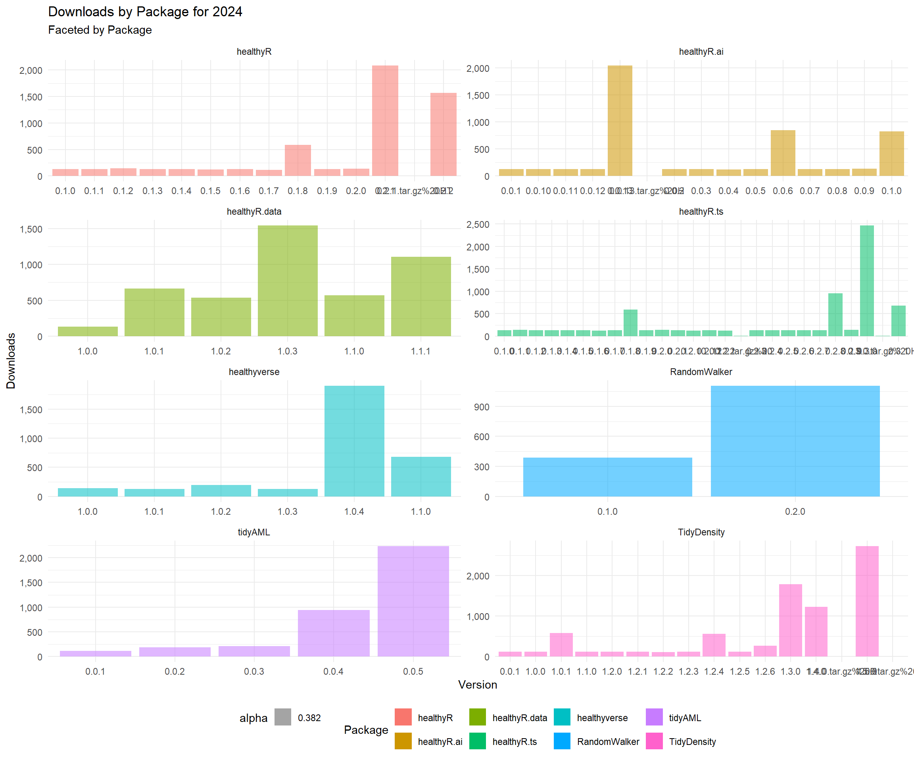
data_tbl %>%
count(package, version) %>%
group_by(package) %>%
mutate(cumulative_downloads = cumsum(n)) %>%
mutate(record = row_number()) %>%
ungroup() %>%
ggplot(aes(x = record, y = cumulative_downloads, alpha = 0.382)) +
geom_col(aes(group = package, fill = package)) +
facet_wrap(package ~., ncol = 2, scales = "free") +
scale_y_continuous(labels = scales::label_number(big.mark = ",")) +
theme_minimal() +
theme(legend.position = "bottom") +
labs(
title = "Downloads by Package for 2021",
subtitle = "Faceted by Package",
x = "Relase Number",
y = "Downloads",
fill = "Package"
)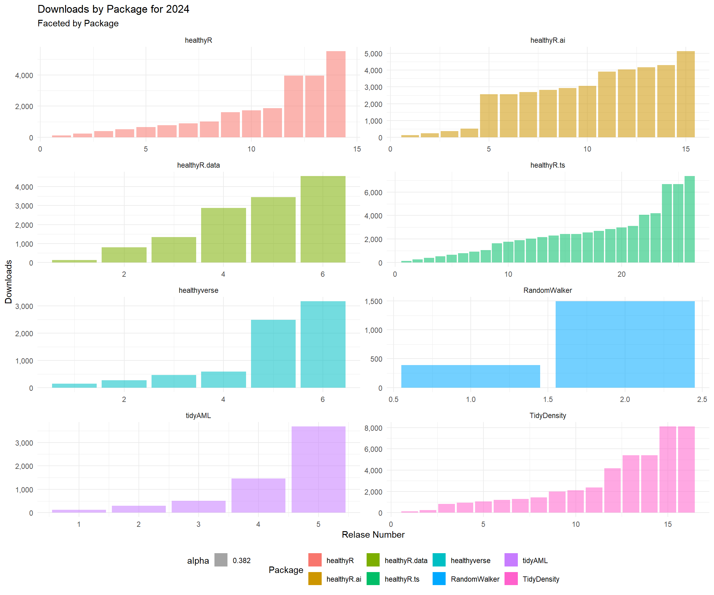
data_tbl %>%
count(package, version) %>%
group_by(package) %>%
mutate(cumulative_downloads = cumsum(n)) %>%
mutate(record = row_number()) %>%
ungroup() %>%
ggplot(aes(x = record, y = cumulative_downloads, alpha = 0.382)) +
geom_line(aes(color = package, group = package), size = 1) +
scale_y_continuous(labels = scales::label_number(big.mark = ",")) +
theme_minimal() +
theme(legend.position = "bottom") +
labs(
title = "Cumulative Downloads by Package for 2021",
subtitle = "Colored by Package",
x = "Release Number",
y = "Downloads",
color = "Package"
)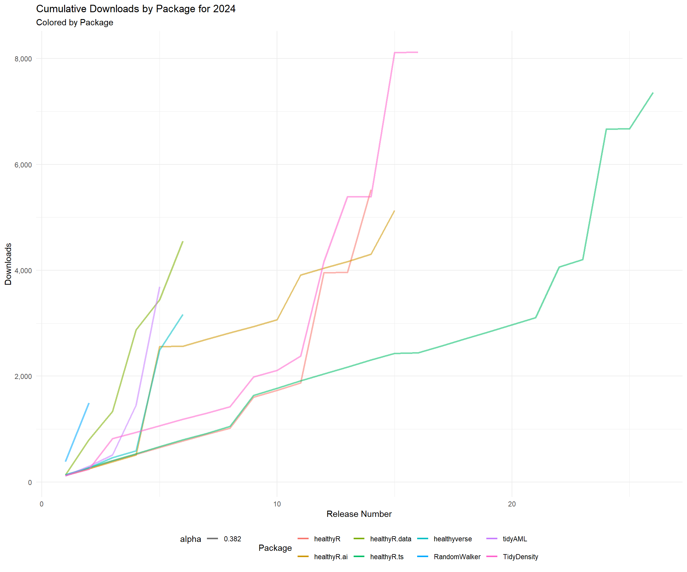
Time Series Graphs
Now lets get some time-series graphs.
library(healthyR.ts)
pkg_tbl <- readRDS("00_data/pkg_release_tbl.rds")
data_tbl %>%
summarise_by_time(.date_var = date, n = n()) %>%
ts_calendar_heatmap_plot(.date_col = date, .value_col = n, .interactive = FALSE)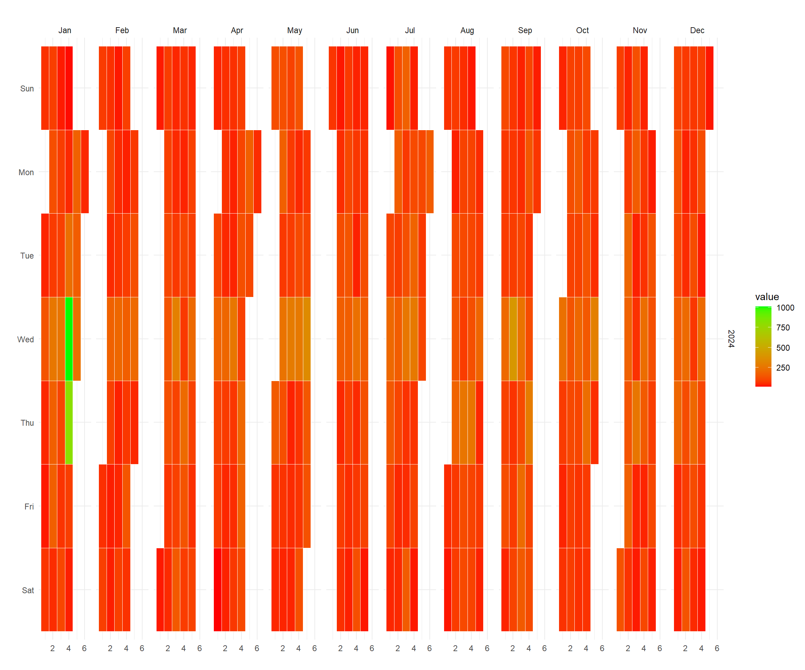
data_tbl %>%
ts_downloads_tbl(.by_time = "day", package) %>%
ggplot(aes(date, log1p(value))) +
geom_point(aes(group = package, color = package), size = 1) +
ggtitle(paste("Package Downloads: {healthyverse}")) +
geom_smooth(method = "loess", color = "black", se = FALSE) +
geom_vline(
data = pkg_tbl
, aes(xintercept = as.Date(date))
, color = "red"
, lwd = 1
, lty = "solid"
) +
facet_wrap(package ~., ncol = 2, scales = "free_x") +
theme_minimal() +
labs(
subtitle = "Vertical lines represent release dates",
x = "Date",
y = "log1p(Counts)",
color = "Package"
) +
theme(legend.position = "bottom")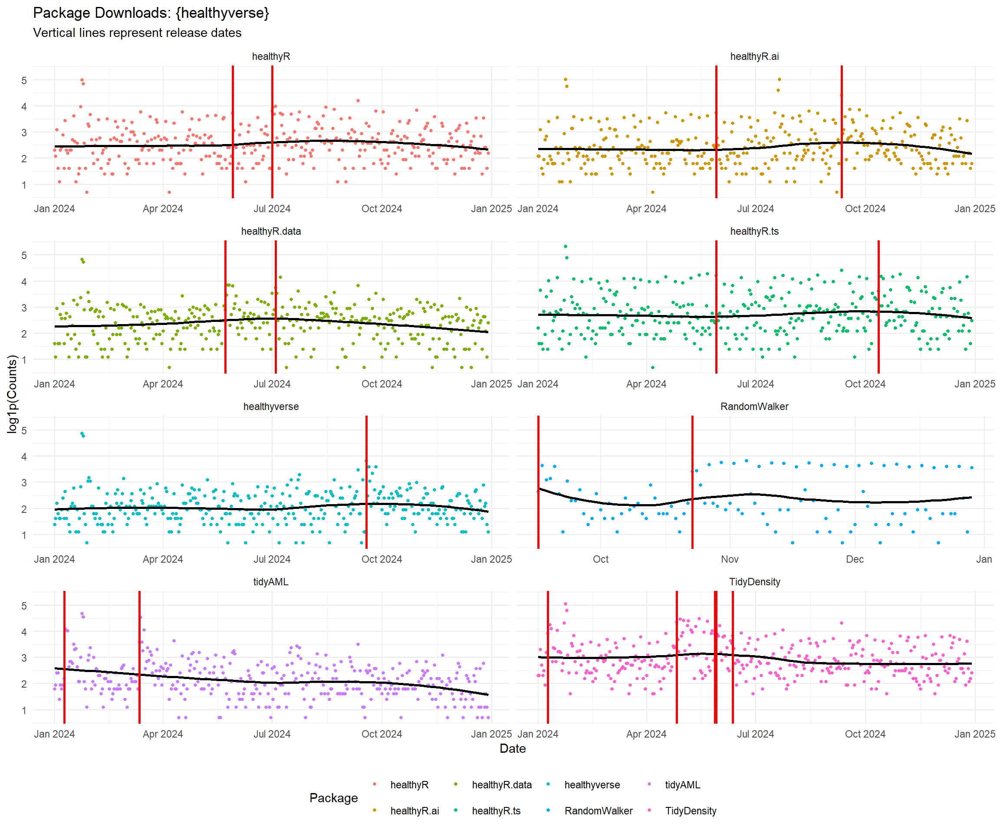
data_tbl %>%
ts_downloads_tbl(.by_time = "day") %>%
rename(Actual = value) %>%
tk_augment_differences(.value = Actual, .differences = 1) %>%
tk_augment_differences(.value = Actual, .differences = 2) %>%
rename(velocity = contains("_diff1")) %>%
rename(acceleration = contains("_diff2")) %>%
pivot_longer(-date) %>%
mutate(name = str_to_title(name)) %>%
mutate(name = as_factor(name)) %>%
ggplot(aes(x = date, y = log1p(value), group = name)) +
geom_point(alpha = .2) +
geom_vline(
data = pkg_tbl
, aes(xintercept = as.Date(date), color = package)
, lwd = 1
, lty = "solid"
) +
facet_wrap(name ~ ., ncol = 1, scale = "free") +
theme_minimal() +
labs(
title = "Total Downloads: Trend, Velocity, and Accelertion",
subtitle = "Vertical Lines Indicate a CRAN Release date for a package.",
x = "Date",
y = "",
color = ""
) +
theme(legend.position = "bottom")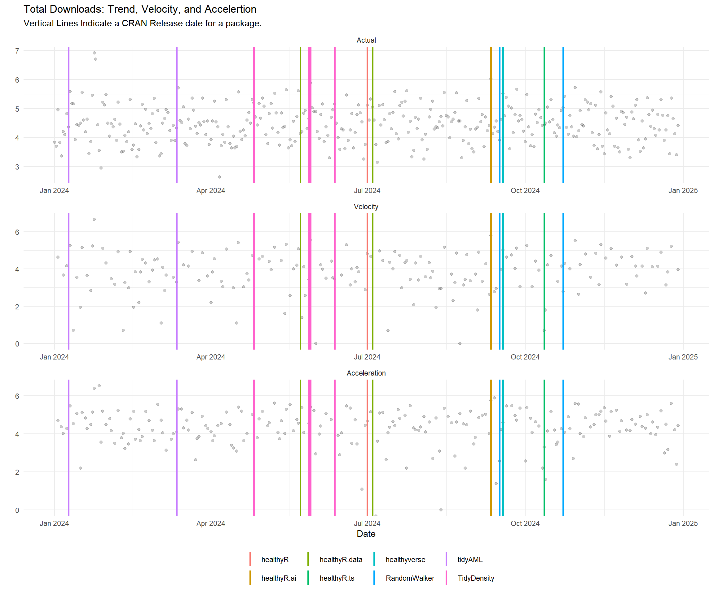
data_tbl %>%
ts_downloads_tbl(.by_time = "day") %>%
plot_seasonal_diagnostics(
.date_var = date,
.value = log1p(value),
.interactive = FALSE
) +
theme_minimal() +
labs(
title = "Seasonal Diagnostics",
subtitle = "Values are log1p"
)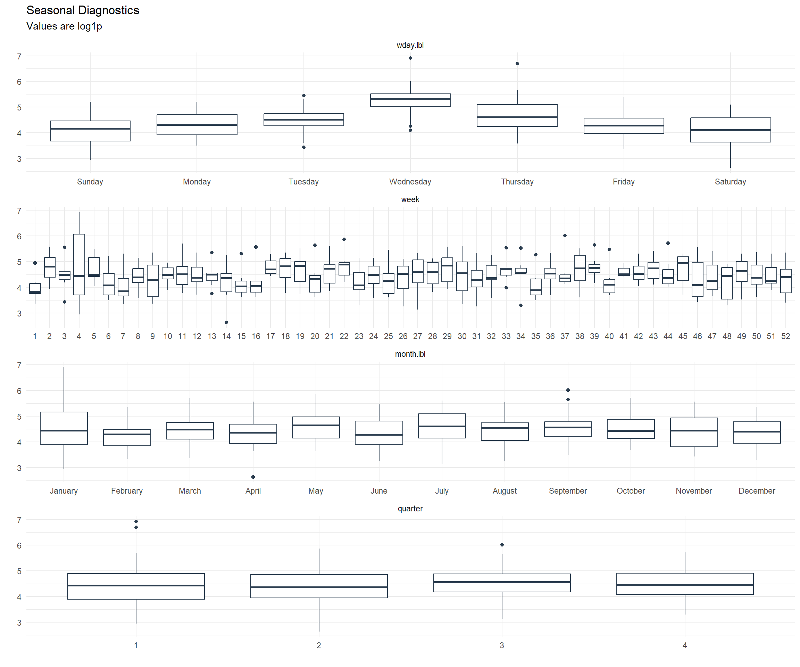
data_tbl %>%
ts_downloads_tbl(.by_time = "day") %>%
plot_stl_diagnostics(
.date_var = date,
.value = log1p(value),
.interactive = FALSE
) +
theme_minimal() +
labs(
title = "STL Diagnostics",
subtitle = "Values are log1p"
)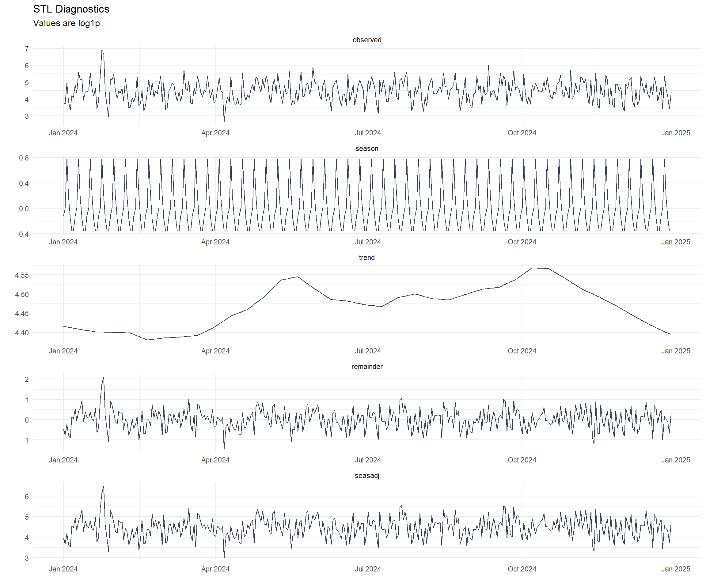
Mapping
So now that we have seen all the downloads in variaous ways, where did they all come from? Lets take a look.
library(tmaptools)
library(countrycode)
library(mapview)
library(htmlwidgets)
library(webshot)
mapping_dataset(.data_year = "2021") %>%
head() %>%
knitr::kable()| country | latitude | longitude | display_name | icon |
|---|---|---|---|---|
| Ghana | 8.030028 | -1.080027 | Ghana | https://nominatim.openstreetmap.org/ui/mapicons//poi_boundary_administrative.p.20.png |
| United States | 39.783730 | -100.445882 | United States | https://nominatim.openstreetmap.org/ui/mapicons//poi_boundary_administrative.p.20.png |
| Hong Kong SAR China | 22.350627 | 114.184916 | 香港 Hong Kong, 中国 | https://nominatim.openstreetmap.org/ui/mapicons//poi_boundary_administrative.p.20.png |
| Canada | 61.066692 | -107.991707 | Canada | https://nominatim.openstreetmap.org/ui/mapicons//poi_boundary_administrative.p.20.png |
| China | 35.000074 | 104.999927 | 中国 | https://nominatim.openstreetmap.org/ui/mapicons//poi_boundary_administrative.p.20.png |
| Jordan | 31.166705 | 36.941628 | الأردن | https://nominatim.openstreetmap.org/ui/mapicons//poi_boundary_administrative.p.20.png |
{kind=link}
# l <- map_leaflet(.data = data_tbl)
# mapshot(x = l, file = "map.png")
l <- map_leaflet()
saveWidget(l, "downloads_map.html")
try(webshot("downloads_map.html", file = "map.png", cliprect = "viewport"))
There was a total of 121 different countries that downloaded
healthyverse packages in 2021.
GitHub Stats
Now lets take a look at some quick stats from my GitHub
First my contribution grid:

Secondly my badge: